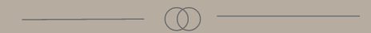

OM MIG
Mit navn er Laura Nyberg Amelung, jeg er 22 år gammel og studerer til multimediedesigner på 1 semester på Københavns Erhvervsakademi.
Til daglig bruger jeg meget af min tid på at designe -og kode indhold til hjemmesider, da jeg synes det er vildt sjovt og interessant. Når jeg ikke bruger min tid på det, bruger jeg i stedet tiden sammen med min kæreste og min familie, da jeg er et kæmpe familiemenneske.
Inden jeg startede på multimediedesigner uddannelsen, var jeg 8 måneder på en international filmhøjskole. Her lærte jeg rigtig meget praktisk håndværk, omkring hvordan man producere film.
Efter højskolen var jeg så heldig, at få lov til at komme ind i DR og være med på deres hold for unge digitale talenter. Her lærte jeg meget omkring, idé -og konceptudvikling, samt prototyping i konkrete udviklingsforløb. Dette for at fremme DR´s digitale udvikling.
Jeg vil beskrive mig selv som et meget kreativt menneske, der er meget nede på jorden og nem at omgås, også elsker jeg at lære nye ting og tager gerne imod en udfordring
ESPERGÆRDE GYMNASIUM (2017 - 2020)
Studieretning: Samfundsfag A / Engelsk A
EUROPEAN FILM COLLEGE (2021 - 2022)
Gennemførte kurser:
Lighting for film - Producing and production management - Klipper - Dialog KlipningDR LAB (2022)
Idé -og konceptudvikling samt prototyping i konkrete udviklingsforløb. Dette for at fremme DR´s digitale udvikling
SAC-IT (2023)
- Power apps designer